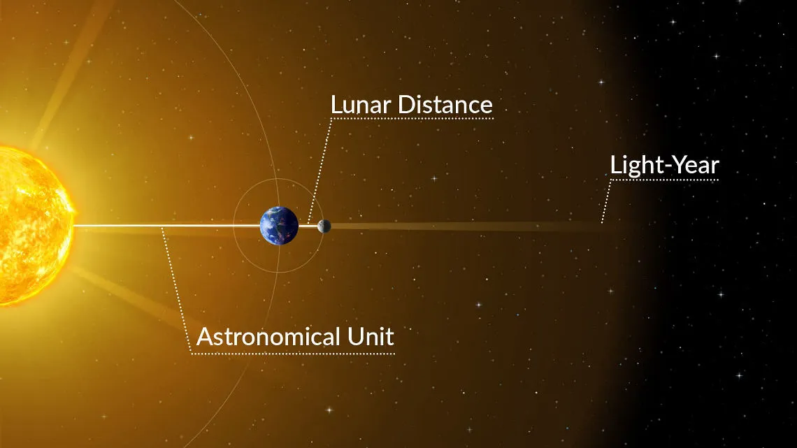

Unidade astronômica
Unidade astronômica é uma unidade de comprimento dada pela distância média da Terra ao Sol, equivalente a 149,6 x 106. A distância Terra-Sol varia ao longo do ano, pois a órbita da Terra em torno do Sol apresenta uma leve excentricidade: durante o apogeu e o perigeu, a Terra se encontra nas distâncias máxima e mínima, respectivamente, em relação ao Sol.
